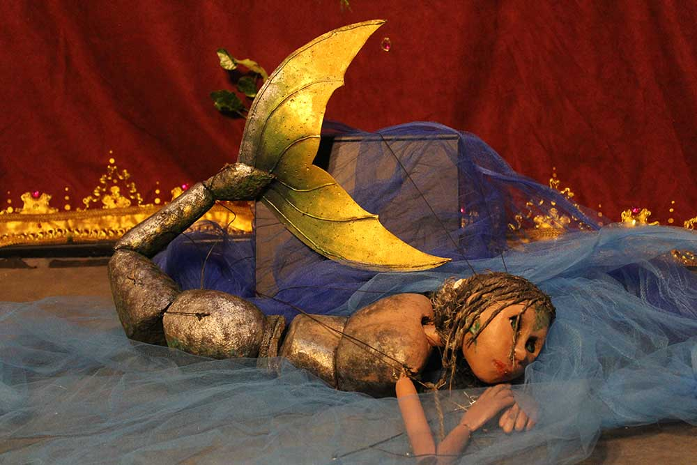
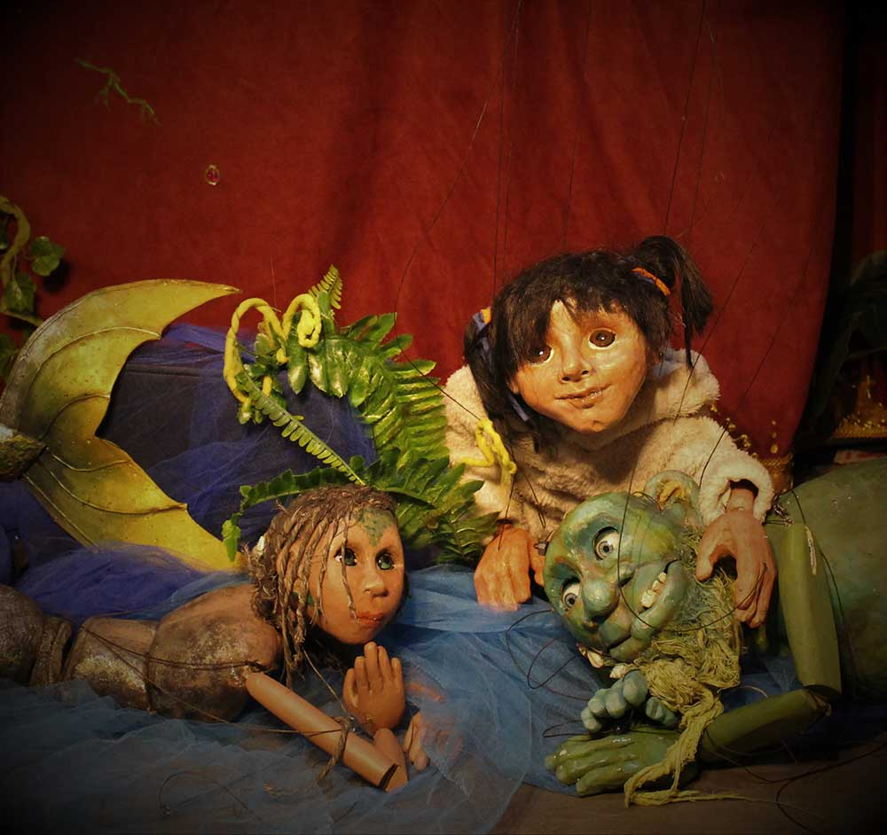

"DÓNDE ESTÁ BORONDONGO ?"
En el Teatro de la Laguna está todo preparado. El telón, las luces y hasta el público. La Sirena Luna ya está maquillada para su presentación de danza acuática, pero la atracción principal: "El Monstruo Borondongo" no aparece. La abuela y Juanita revolvieron toda la laguna tratando de encontrarlo, y nada. Con la ayuda de Renato, el limpiador de piscinas descubrirán por qué el Monstruo no quiere salir a escena. Entre risas y canciones el Teatro de la Laguna logrará presentar su show y Renato descubrirá, que el único tiempo perdido es el que no se disfruta.
-
Dramaturgia y marionetas
-Rosana Lopez. -
Dirección:
-Eleonora Acosta- Rosana Lopez. -
Diseño sonoro:
-Facundo Silione. -
Operación técnica:
Pablo Di Paolo
Galería de imágenes


